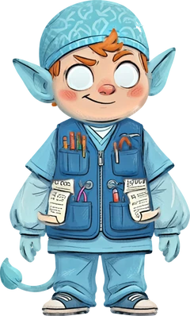

Din studieplats
Välkommen till Remissnissen.
Välj din termin för att komma till kursens startsida, verktyg, målbeskrivningar och examinationer.

RemissnissenAlla terminerDin studieplats
Välj din termin för att komma till kursens startsida, verktyg, målbeskrivningar och examinationer.